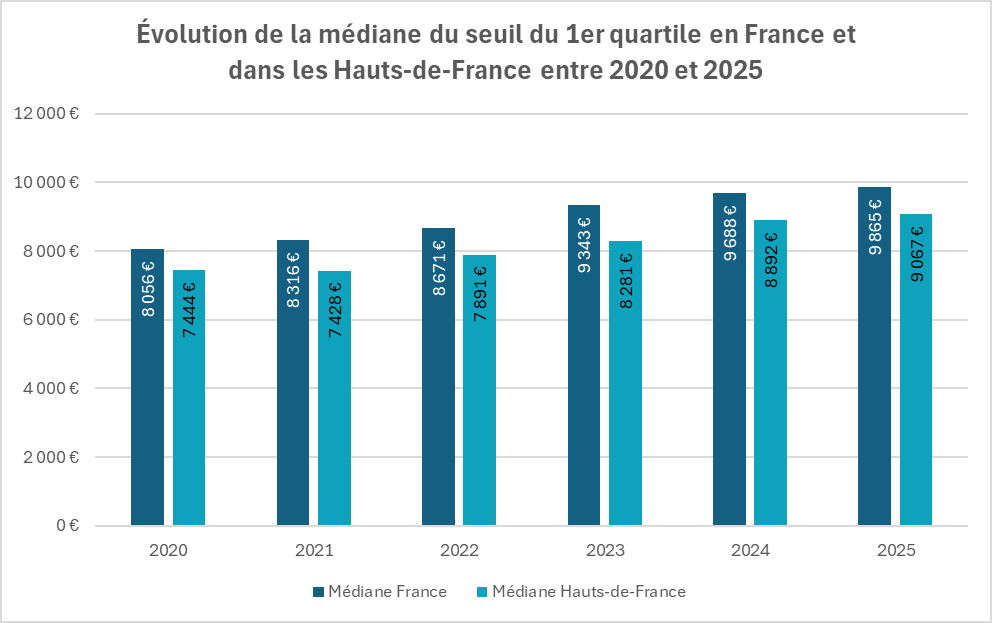

Évolutions
Évolutions
Quelques statistiques à l'échelle nationale et régionale !
Rappel : La Loi Égalité et Citoyenneté (LEC)
Promulguée en 2017, la Loi Égalité et Citoyenneté (souvent abrégée LEC) a pour objectif de favoriser la mixité sociale en visant une meilleure adéquation entre les ressources des ménages et les logements sociaux attribués, et en réservant une part des logements aux ménages aux revenus les plus modestes. Pour y parvenir, deux mesures principales permettent d’encadrer les attributions de logements sociaux :
- Au moins 25 % des logements sociaux disponibles dans les quartiers hors des quartiers prioritaires de la ville (QPV) doivent être attribués aux 25 % des ménages les plus modestes (appelés ménages du 1er quartile ou Q1) ;
- Au moins 50 % des attributions en QPV doivent bénéficier aux ménages appartenant aux trois autres quartiles.
Cet objectif de mixité sociale, défini par les ressources des ménages, s’applique sur les EPCI tenus de se doter d’un PLH (ou ayant la compétence en matière d’habitat) et qui possèdent au moins un QPV sur son territoire.
Les EPCI concernés par le seuil de ressources des demandeurs de logement du premier quartile au niveau national et régional
Sur chacun de ces EPCI, les ressources déclarées dans le SNE par les demandeurs de logement social au 31 décembre de chaque année déterminent ce seuil de ressources en dessous duquel le quart des demandeurs de logement le plus pauvre déclare vivre. Mais comment se calcule-t-il ?
Calcul du seuil du premier quartile en 2025
Ce seuil est fixé annuellement par arrêté du ministre en charge du logement, à l’échelle de chaque EPCI concerné. Paru au Journal Officiel de la République française le 7 juin 2025, l’arrêté du 3 juin 2025 fixant le seuil de ressources des demandeurs de logement social du premier quartile mentionné à l’article L. 441-1 du code de la construction et de l’habitation précise les nouveaux montants dont les bailleurs sociaux doivent tenir compte en matière de relogement.
Pour déterminer ce seuil, sont prises en compte :
- Les ressources mensuelles du ménage demandeur (RM) ;
- Les unités de consommation (UC) du ménage demandeur :
- 1er adulte = 1 UC ;
- Autres membres du foyer ≥ 14 ans = 0,5 UC ;
- Autres membres du foyer ≤ 14 ans = 0,3 UC.
(RM x 12 mois) / UC
Les évolutions du seuil du premier quartile en 2025
Dans les Hauts-de-France, le seuil du premier quartile a progressé en moyenne de 21,7 % entre 2020 et 2025.
En 2025, le seuil médian du premier quartile est de 9 864,50 €, ce qui veut dire que dans la moitié des EPCI concernés en France, le quart des demandeurs HLM le plus pauvre déclare des ressources qui n’excèdent pas >822 € mensuels (pour une personne seule).
Le seuil médian 2025 dans les Hauts-de-France est quant à lui établi à 9 067 € (contre 8 892 € en 2024), soit 756 € de ressources mensuelles déclarées.
Cela représente 8,1 % de moins que la médiane nationale.
Tous les EPCI ont enregistré une hausse de leur seuil Q1 durant ces cinq dernières années :
- La plus forte augmentation eu lieu dans la CA des Deux Baies en Montreuillois (34,4 %) ;
- La plus faible augmentation a eu lieu à la CC des Trois Rivières (12,2 %). Notons qu’il s’agit d’ailleurs de l’EPCI de la région qui possède le plus faible seuil Q1 chaque année.
Entre 2024 et 2025, 9 EPCI de la région ont vu leur seuil Q1 faiblement diminuer (entre -0,1 % et 2,8 %). La plus forte baisse revient à la CC Retz-en-Valois (-2,79 %).
Les 31 autres EPCI ont vu leur seuil augmenter. La plus forte progression revient à la CA de la région de Compiègne et de la Basse Automne (+5,79 %).
Dans les Hauts-de-France, les ressources des demandeurs sont nettement plus faibles : en effet, 73 % des EPCI ont un seuil inférieur à cette médiane (soit 29 EPCI sur les 40 concernés), traduisant l’ampleur des difficultés économiques en région.
Au sein même des Hauts-de-France, des disparités infra-régionales montrent des situations particulièrement difficiles qui ont des incidences sur la mise en œuvre de la loi : en effet, dans 4 EPCI de la région, le seuil du premier quartile est inférieur au montant du RSA socle. Il s’agit des EPCI suivants :
- CC des Trois-Rivières ;
- CA du Caudrésis et du Catésis ;
- CC du Sud Avesnois ;
- CA du Pays de Laon.
Dans ces 4 EPCI, les 25 % les plus pauvres déclarent vivre avec des ressources inférieures au RSA socle (soit 646,52 €/mois).
Dans 10 % des EPCI concernés par la mesure en Hauts-de-France, l’objectif concerne des ménages dont le niveau de ressources est inférieur au RSA socle.
Si ce constat soulève des questions d’accès aux droits, il peut aussi traduire un enjeu de fiabilisation des ressources renseignées par les demandeurs de logement, dans le système national (SNE) qui sert de base au calcul de ces montants. Ce débat est déjà posé depuis de nombreuses années et continue d’alimenter les discussions.